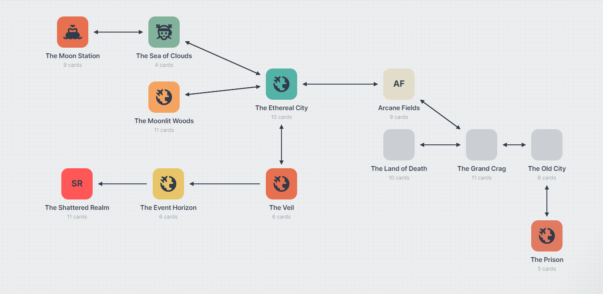

The Eternal Dream Devlog

Devlog Post #1
Welcome to the devlog of my indie game The Eternal Dream! I began this project as an experiment and as a testbed to learn Unity. At some point I realized I had quite a few ideas for where to take this project and well, here we are. I have plans to include 12 'levels' or areas to the game, including jumping puzzles, enemies, bosses, and some upgrades to acquire along the way. I have built out plans for a lore rich game world focused on visual, contextual, and log based story telling. I am currently a 1 man dev team, occasionally receiving help from friends here and there. I have an ambitious vision for this game, that I intend to make a reality. I hope you will join me for the ups and downs of learning to develop an indie game!
Devlog Post #2
I have created the storyboard and world layout for the game. Though it's all subject to change, I am quite satisfied with the current result. I have designed 12 areas, given each a unique theme, lore, enemies, and challenges. To achieve this I am using a website called 'Milanote' as a virtual corkboard to leave my ideas. It allows you to create 'boards' that can then be filled with 'cards' such as images, notes and to do lists. It has been extremely useful for planning out the ideas for my game.
Devlog Post #3

When building a platformer, there is at least one thing I've learned so far. You need to be able to platform! The ability to jump has been implemented. I decided to leave lots of air control for the player, it will allow for more complex jumping puzzles that require mid air decision making. When I first added jumping, it was possible to get caught on walls mid jump, simply sticking to them. While that was kind of funny, I decided it would be more fun from a gameplay perspective if that didn't happen, so after messing around with Unity Material Friction, I was able to make it possible to "clamber up" walls on jumps you would otherwise just barely not make. I am currently using Unity store free assets, so there is no animation for the climbing yet, but I am taking things one step at a time.
About Me
My discord tag/name is Castle Whale.